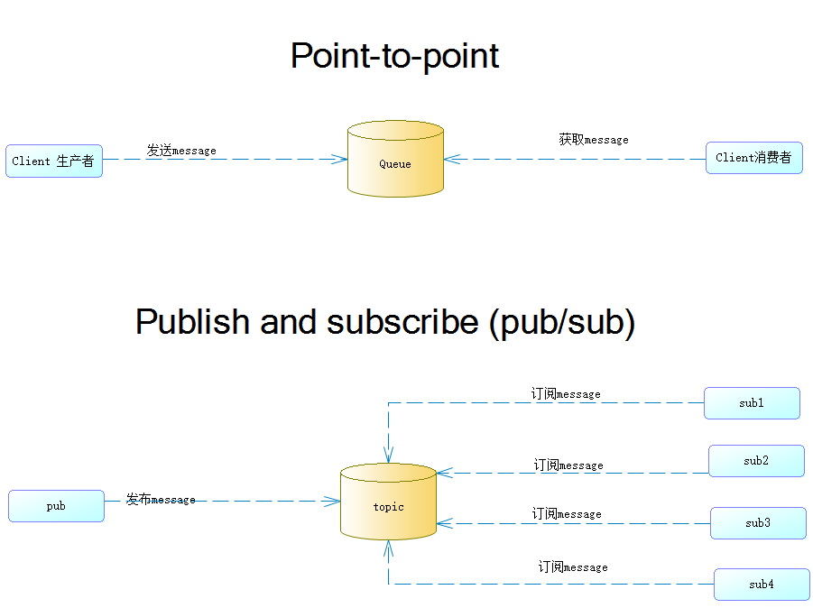
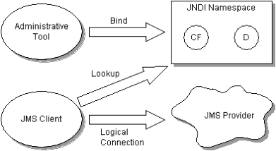
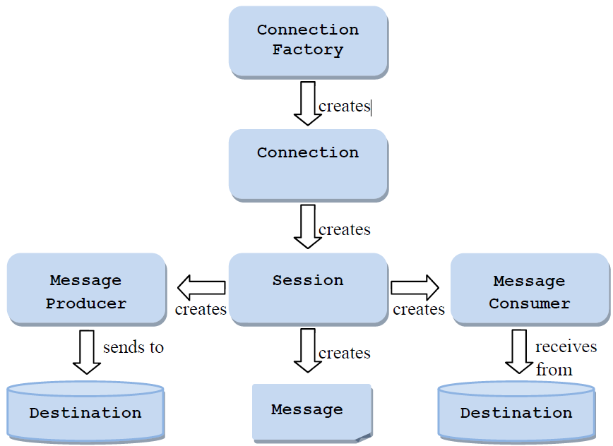
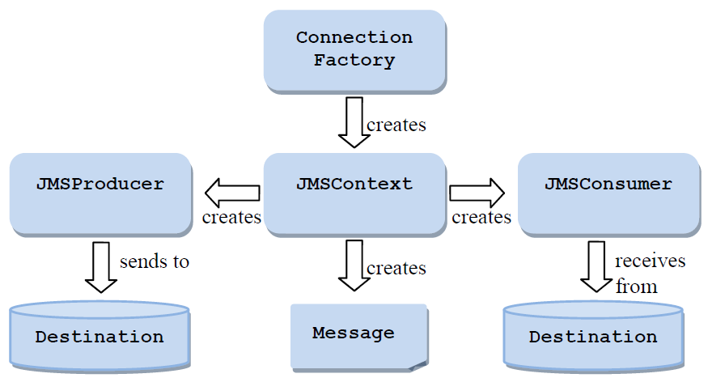

JMS2.0
JMS Domains
JMS supports the two major styles of messaging provided by enterprise messaging products:
- Point-to-point (PTP) messaging allows a client to send a message to another client via an intermediate abstraction called a queue.
The client that sends the message sends it to a specific queue. The client that receives the message extracts it from that queue. - Publish and subscribe (pub/sub) messaging allows a client to send a message to multiple clients via an intermediate abstraction called a topic.
The client that sends the message publishes it to a specific topic. The message is then delivered to all the clients that are subscribed to that topic.

Architecture(体系架构)
What is a JMS application?
A JMS application is composed of the following parts:
- JMS Clients - These are the Java language programs that send and receive messages.
- Non-JMS Clients - These are clients that use a message system’s native client API
instead of JMS.If the application predated the availability of JMS it is likely that it will include both JMS and non -JMS clients. - Messages - Each application defines a set of messages that are used to communicate information between its clients.
- JMS Provider - This is a messaging system that implements JMS in addition to the other administrative and control functionality required of a full featured messaging product.
Administered Objects - Administered objects are preconfigured JMS objects created by an administrator for the use of clients.
ConnectionFactory- This is the object a client uses to create a connection with a provider.Destination- This is the object a client uses to specify the destination of messages it is sending and the source of messages it receives.

Interfaces common to multiple APIs
The main interfaces common to multiple APIs are as follows:
Message,BytesMessage,MapMessage,ObjectMessage,StreamMessageandTextMessage– a message sent to or received from a JMS provider.Queue– an administered object that encapsulates (封装) the identity of a message destination for point-to-point messagingTopic– an administered object that encapsulates the identity of a message destination for pub/sub messaging.Destination- the common supertype ofQueueandTopic
Classic API interfaces
The main interfaces provided by the classic API are as follows:
ConnectionFactory- an administered object used by a client to create a Connection. This interface is also used by the simplified API.Connection- an active connection to a JMS providerSession- a single-threaded context for sending and receiving messagesMessageProducer- an object created by aSessionthat is used for sending messages to a queue or topicMessageConsumer- an object created by aSessionthat is used for receiving messages sent to a queue or topic
Simplified API interfaces
The simplified API provides the same messaging functionality as the classic API but requires fewer interfaces and is simpler to use.
The main interfaces provided by the simplified API are as follows:
ConnectionFactory- an administered object used by a client to create aConnection. This interface is also used by the classic API.JMSContext- an active connection to a JMS provider and a single-threaded context for sending and receiving messagesJMSProducer- an object created by aJMSContextthat is used for sending messages to a queue or topicJMSConsumer- an object created by aJMSContextthat is used for receiving messages sent to a queue or topic
In the simplified API a single JMSContext object encompasses the behaviour which in the classic API is provided by two separate objects, a Connection and a Session. Although this specification refers to the JMSContext as having an underlying “connection” and “session”, the simplified API does not use the Connection and Session interfaces.